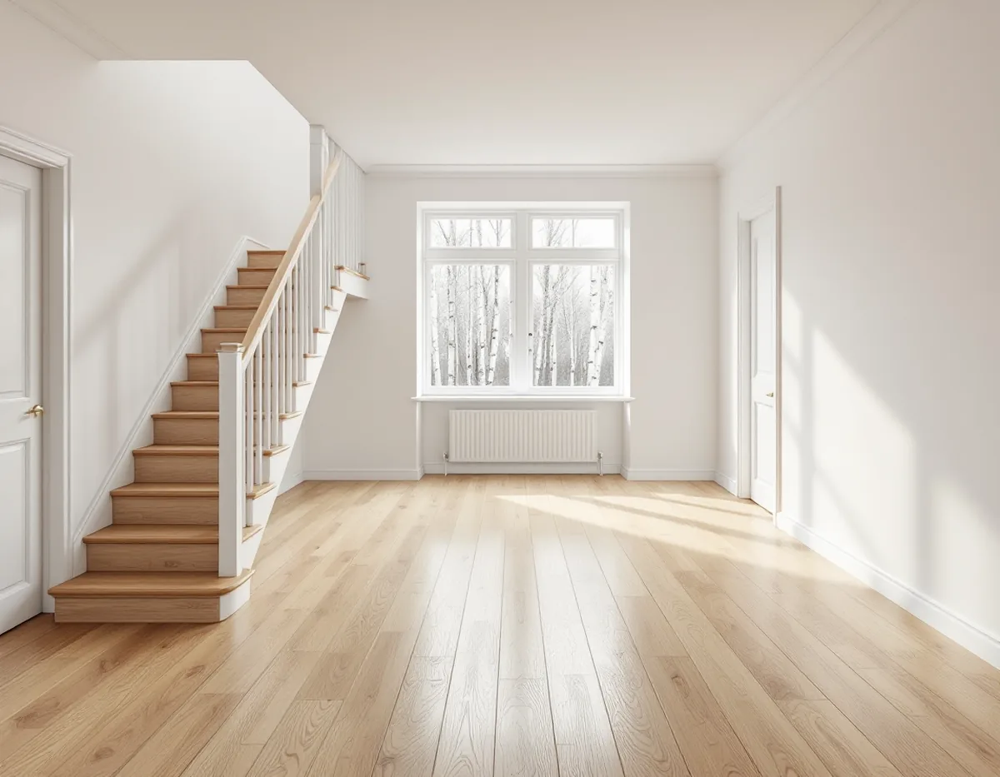
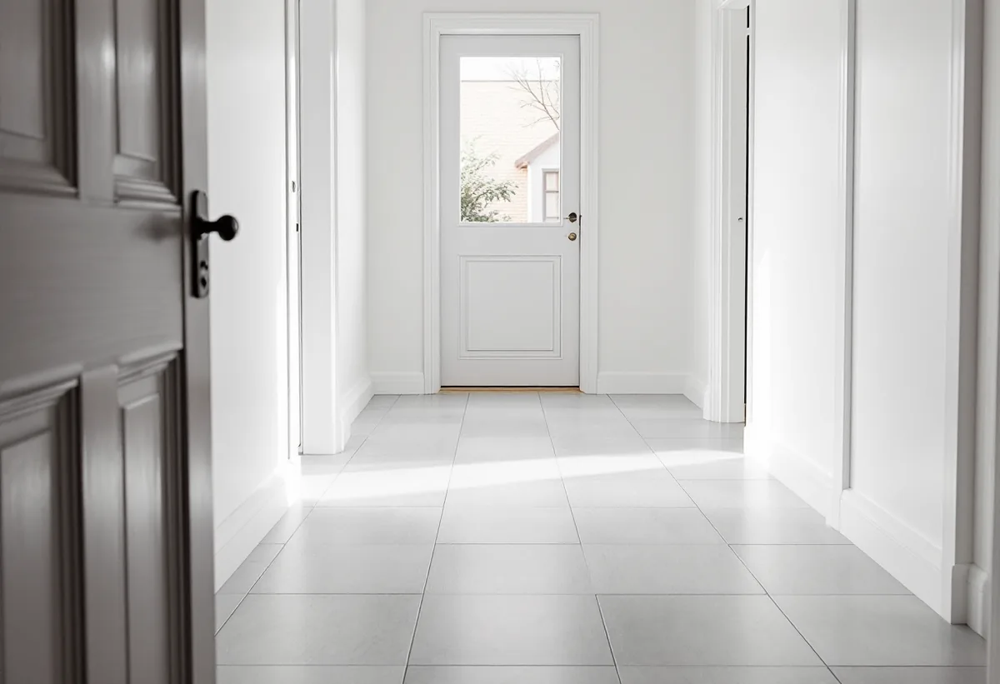

Besök
Vi mäter ytor och höjder, tittar på underlaget och går igenom dina önskemål om golvvärme.
I Sollentuna bor många i villa eller radhus, i allt från tidiga 1900-talsvillor nära stationerna till radhusgrupper från 1970- och 80-talen. Golvjobben varierar därefter. Geal Entreprenad AB lägger nya golv, slipar trägolv och planerar golvvärme i hela Sollentuna, med gratis platsbesök och skriftligt kostnadsförslag.

Sollentunas översiktsplan beskriver hur järnvägen mellan Stockholm och Uppsala byggdes 1866, med Rotebro som första station. I början av 1900-talet anlades stationer i Tureberg och Norrviken, senare även i Helenelund och Häggvik, och det var då man började bygga småhus och villor. Översiktsplanen vill att Sollentuna bevarar den prägel av villastad som växte fram under 1900-talets första hälft.
Sjöberg är ett exempel på en senare utbyggnad. Enligt översiktsplanen styckades de första villatomterna av redan på 1920-talet, men området präglades fram till 1960-talet av skog och fritidsbebyggelse. Den stora utbyggnaden skedde under 70-, 80- och 90-talen, med en blandning av villor, radhus och flerbostadshus.

I ett radhus från 1970- eller 80-talet är bottenplanet ofta en sammanhängande yta med hall, kök och vardagsrum. Det gör det lockande att lägga samma golv överallt. Det är också det jobb som kräver mest planering, eftersom köksskåp, trappa och dörrkarmar ska anpassas samtidigt och ett flytande golv över en stor yta behöver rörelsefogar på rätt ställen.
Ligger bottenplanet på betong behöver fukten kontrolleras innan något läggs. Golvbranschen rekommenderar att bjälklagets relativa fuktighet kontrolleras innan avjämningsmassan läggs, och att underliggande betong har nått den nivå som golvet kräver. Mätningen görs av en fuktkontrollant inom RBK, och vi samordnar den åt dig.
Sollentuna kommun skriver att den som vill göra ändringar som påverkar den bärande konstruktionen, till exempel ingrepp i en takstol eller i ett bjälklag, behöver göra en anmälan och få startbesked. Till anmälan hör plan- och sektionsritning, konstruktionsritningar och ett förslag till kontrollplan, och vid mer omfattande arbeten även en kontrollansvarig.
Ett vanligt golvbyte rör inte bjälklaget. Annorlunda blir det om bjälkar ska kapas för en ny trappa, sänkas för att få plats med golvvärme eller förstärkas för att bära ett tungt stengolv. Vi bedömer vid besöket om det du vill göra hamnar där, och lägger i så fall in tiden för anmälan i tidplanen.
Golvvärme i hall, kök eller badrum är en vanlig önskan när golvet ändå ska bytas. Elektrisk golvvärme byggs in i ett tunt skikt ovanpå underlaget och kopplas in av en elinstallatör. Vattenburen golvvärme kopplas till husets värmesystem och kräver mer bygghöjd, vilket i ett befintligt hus ofta betyder att golvet blir högre eller att underlaget behöver göras om.
Vilket golv som passar ovanpå beror på systemet. Klinker leder värmen bra, medan trägolv och parkett ska vara avsedda för golvvärme enligt tillverkarens anvisningar. Vi tar fram ett förslag där golv, underlag och värmesystem hänger ihop och samordnar med elektriker eller rörläggare för de delar som kräver det.
I villorna från 1900-talets första hälft finns ofta trägolv kvar i vardagsrum och sovrum, ibland under en senare matta. De kan slipas fram och få ny yta. Var försiktig med att slipa ett golv som redan har slipats många gånger; vi mäter hur mycket trä som finns kvar och föreslår en lättare behandling om marginalen är liten.
I ett radhus delar du dessutom vägg med grannen, och ett hårt golv kan göra stegljud och skrapande stolar tydligare både hos dig och hos dem. Ett underlag som dämpar ljudet och filtar under möblerna gör stor skillnad. Läs mer om golvtyper och slipning på sidan om golvläggning.
Vi mäter ytor och höjder, tittar på underlaget och går igenom dina önskemål om golvvärme.
Vi säger om något i förslaget rör bjälklaget och kräver anmälan till kommunen.
Arbete, material, fuktmätning och eventuella installatörer står på egna rader.
Möbler flyttas, gamla golv tas bort och fukten mäts där golvet ligger på betong.
Underlag, eventuell golvvärme och nytt golv läggs, med anpassade trösklar och lister.
Vi städar, går igenom golvet och lämnar skötselråd.
Skatteverket räknar golvläggning och golvslipning som rotarbete i ett småhus som du äger och bor i. Avdraget är 30 procent av arbetskostnaden, högst 50 000 kr per person och år och högst 75 000 kr tillsammans med rutavdrag.
Bara arbetskostnaden ger avdrag, inte golvmaterial eller resor. Vi drar avdraget direkt på fakturan.
Ytans storlek, hur mycket som ska rivas och om underlaget behöver riktas styr mest. Golvvärme, fuktmätning och anpassning av trappor och köksskåp tillkommer om de ingår. Platsbesöket är gratis och du får ett skriftligt kostnadsförslag.
Parkett, trägolv, klinker och slipning.
Golvläggning i Stockholm →Takbyte, takbesiktning och plåtarbeten.
Takläggare i Sollentuna →Norrviken, Tureberg och Edsberg.
Takrenovering i Sollentuna →Radhus, villa och en extra bostad.
Attefallshus i Sollentuna →Tillbyggnad, tomtdelning och lov.
Byggföretag i Sollentuna →Ny kulör och lov i villastaden.
Fasadmålning i Sollentuna →Buller, ljudglas och radhus i Sollentuna.
Fönsterbyte i Sollentuna →Täta gamla fönster med ventilationen i åtanke.
Fönsterrenovering i Sollentuna →Villastad, radhus och ventilationen.
Badrumsrenovering i Sollentuna →Villor och radhus i Sollentuna.
Fasadrenovering i Sollentuna →Massivt trä eller lamell – vad går att slipa.
Golvslipning i Sollentuna →Villastad och radhuslängor.
Köksrenovering i Sollentuna →Villor och radhus i Sollentuna.
Målare i Sollentuna →Radhusplåt, bleck och rännor i Sollentuna.
Plåtslagare i Sollentuna →Altaner, uterum och bryggor.
Snickare i Sollentuna →Ansökan, solceller och radhus.
Takbyte i Sollentuna →Ny tapet efter prov av väggen.
Tapetsering i Sollentuna →På höjden, nya byggregler och ritningar.
Tillbyggnad i Sollentuna →Radon med i planen för hela huset.
Totalrenovering i Sollentuna →